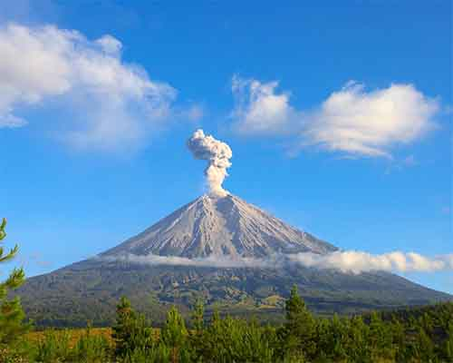
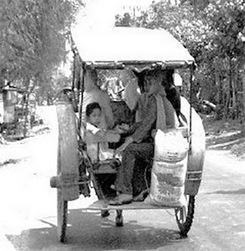
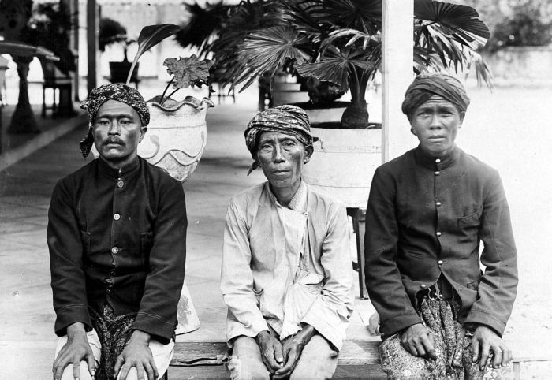
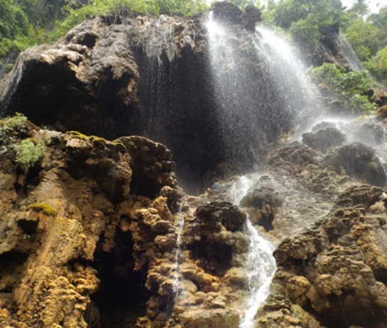
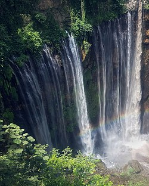

Geografis

Kabupaten Lumajang terletak pada 112ℴ53' - 113ℴ23' Bujur Timur dan 7ℴ54' - 8ℴ23' Lintang Selatan. Luas wilayah keseluruhan Kabupaten Lumajang adalah 1790,90 km2. Kabupaten Lumajang terdiri dari dataran yang subur karena diapit oleh tiga gunung berapi yaitu:
- Gunung Semeru (3.676 m)
- Gunung Bromo (2.329 m)
- Gunung Lemongan (1.651 m)
Lumajang merupakan salah satu kabupaten yang terletak di kawasan Tapal Kuda Provinsi Jawa Timur. Di bagian barat, yakni di perbatasan dengan Kabupaten Malang dan Kabupaten Probolinggo, terdapat rangkaian Pegunungan Bromo-Tengger-Semeru, dengan puncaknya Gunung Semeru (3.676 m) dan Gunung Bromo (2.392 m). Gunung Semeru adalah gunung tertinggi di Pulau Jawa.
Bagian timur laut merupakan ujung barat Pegunungan Iyang. Sedangkan bagian selatan merupakan daerah datar, dengan sedikit wilayah berbukit hingga bergunung di sebelah barat.
Ketinggian daerah Kabupaten Lumajang bervariasi dari 0-3.676 m dpl., dengan daerah yang terluas adalah pada ketinggian 100–500 m dari permukaan laut, yakni seluas 63.405,50 Ha (35,40 % wilayah); dan yang tersempit adalah pada ketinggian 0–25 m dpl yaitu seluas 19.722,45 Ha atau 11,01 % dari luas keseluruhan Kabupaten.
Batas Wilayah
Adapun batas-batas wilayah Kabupaten Lumajang adalah sebagai berikut:
Vulkanologi
Kabupaten Lumajang dikelilingi tiga gunung berapi yaitu Gunung Semeru, Gunung Bromo dan Gunung Lemongan. Dari ketiga gunung berapi yang masih aktif tersebut, Gunung Semeru mendapat prioritas pemantauan lebih dibanding yang lainnya karena seringnya terjadi aktivitas gunung berapi yang membahayakan masyarakat sekitarnya.
Iklim
Kabupaten Lumajang beriklim tropis. Berdasarkan klasifikasi curah hujan Schmidt dan Ferguson sebagian wilayah termasuk tipe C, yang bersifat agak basah, dan sebagian lainnya bertipe D. Bulan-bulan kering, dengan jumlah curah hujan kurang dari 100 mm per bulan, terjadi pada bulan-bulan Juni–September. Sementara bulan-bulan basah terjadi pada bulan-bulan Desember–Maret dengan jumlah curah hujan lebih dari 200 mm per bulan. Jumlah curah hujan tahunan berkisar antara 1.500-2.500 mm. Suhu udara rata-rata di sebagian besar wilayah Lumajang berkisar antara 24 ℃ - 32 ℃, sedangkan di kawasan pegunungan suhu udara dapat mencapai 5 ℃, terutama di daerah lereng Gunung Semeru.
Hidroli
Kabupaten Lumajang mempunyai 31 sungai dan 6 air terjun. Selain itu juga terdapat danau (ranu) yakni Ranu Pakis, Ranu Klakah dan Ranu Bedali di Kecamatan Klakah serta Ranu Pane dan Ranu Kumbolo di Kecamatan Senduro.
Sungai-sungai yang cukup besar dengan daerah aliran di wilayah Lumajang dan sekitarnya antara lain Kali Besuk Sat, Kali Bondoyudo, Kali Asem, Kali Mujur, Kali Pancing dan Kali Rejali yang semuanya berakhir di Pantai Laut Selatan.
Sejarah
Nama Lumajang berasal dari nama tempat "Lamajang" yang diketahui dari penelusuran sejarah, data prasasti, naskah-naskah kuno, bukti-bukti petilasan dan hasil kajian pada beberapa seminar dalam rangka menetapkan hari jadinya. Beberapa sumber itu antara lain:
- Prasasti Mula Malurung
- Naskah Negarakertagama
- Kitab Pararaton
- Kidung Harsawijaya
- Kitab Bujangga Manik
- Serat Babad Tanah Jawi
- Serat Kandha
Prasasti Mula Malurung adalah prasasti tertua yang menyebut keberadaan "Nagara Lamajang", karenanya dianggap sebagai titik tolak hari jadi Lumajang. Prasasti yang ditemukan pada tahun 1975 di Kediri dan berangka 1177 tahun Saka ini diterbitkan oleh Raja Kertanegara dari Singasari untuk memperingati anugerah Raja Seminingrat kepada Pranaraja berupa dua desa perdikan, Mula dan Malurung. Prasasti ini terdiri dari 12 lempengan tembaga, dan lempengan VII halaman A memuat nama-nama putera-puteri dan kerabat Raja Seminingrat yang diangkat menjadi raja-raja bawahan. Salah satunya, disebutkan bahwa Nararya Kirana yang telah dianggap seolah-olah putera sang Prabu, dijadikan raja di Lumajang. Menurut prasasti tersebut penetapan itu terjadi pada tahun 1177 Saka, yang sesuai dengan tanggal 14 Dulkaidah 1165 tahun Jawa atau tanggal 15 Desember 1255 Masehi.
Mengingat cukup meyakinkan bahwa pada 1255 M itu "Negara Lamajang" sudah merupakan sebuah negara yang berpenduduk, mempunyai wilayah, mempunyai raja (pemimpin) dan pemerintahan yang teratur, maka ditetapkanlah tanggal 15 Desember 1255 M sebagai hari jadi Lumajang yang dituangkan dalam Keputusan Bupati Kepala Daerah Tingkat II Lumajang Nomor 414 Tahun 1990 tanggal 20 Oktober 1990.
Dalam sejarahnya, wilayah ini sangat berhubungan dengan tokoh sejarah bernama Aria Wiraraja. Kitab Pararaton dan Harsawijaya mengisahkan bahwa tokoh yang ketika muda bernama Banyak Wide ini pada mulanya mengabdi di Singasari, namun oleh Raja Kertanegara kemudian dibuang secara halus dari ibu kota Singasari dan dijadikan bupati di Sumenep, Madura timur. Aria Wiraraja kemudian berkesempatan memberikan bantuan dan perlindungan kepada Raden Wijaya ketika ia dan rombongannya melarikan diri ke Sumenep setelah kerajaan Singosari diserang dan ditaklukkan oleh Jayakatwang. Selanjutnya Pararaton dan Kidung Harsawijaya menceritakan bahwa Wiraraja diberi hadiah wilayah bagian timur Jawa Timur yang diberi nama "Lamajang Tigang Juru", ketika Raden Wijaya berhasil memenangkan perang dan menjadi raja pertama di kerajaan Majapahit. Akan tetapi wilayah itu baru dikuasai dan diperintahnya setelah kematian puteranya, Ranggalawe, yang memberontak kepada Majapahit (1295).
Wilayah Lumajang kembali disebut-sebut dalam Kitab Negarakertagama ketika Raja Hayam Wuruk melakukan perjalanan keliling wilayah timur Majapahit pada tahun 1359 M; kala itu wilayah ini sudah dikuasai kembali oleh Majapahit.Nama Lumajang (atau, dalam versi aslinya: Lamajang) ini mengacu pada satu wilayah yang luas di pojok timur (Bld.: Oosthoek) Jawa Timur, di mana termasuk pula di dalamnya wilayah kuno Pajarakan di sekitar Kraksaan, Probolinggo sekarang.
Pada masa penjajahan Belanda, pada tahun 1882 wilayah Lumajang berstatus Distrik (setingkat kecamatan) yang dipimpin oleh seorang Wedana. Kemudian pada tahun 1886 statusnya dinaikkan menjadi Afdeeling (setingkat kabupaten), kepala pemerintahannya adalah seorang Patih Afdeeling. Tahun 1929 sistem pemerintahan di Lumajang dinaikkan lagi statusnya menjadi Kabupaten, dengan kepala pemerintahannya seorang Bupati.
Transportasi

Di Kabupaten Lumajang terdapat jalan raya antar provinsi dan jalur kereta api lintas Surabaya-Jember-Banyuwangi, namun kedua jalur transportasi utama tersebut tidak melalui ibu kota Kabupaten Lumajang. Jalan Nasional Rute 25 berujung di Wonorejo, sekitar 6 km di utara pusat kota Lumajang, menghubungkan Jalan Nasional Rute 1 (lebih dikenal sebagai Jalur Pantura) di Probolinggo dengan Jalan Nasional Rute 3 yang melintasi Kota Lumajang dan berbelok ke timur di Wonorejo menuju Jember, Banyuwangi dan berakhir di Ketapang, lokasi penyeberangan feri ke Bali. Jalan raya no 25 yang bersambung dengan Jalan raya no 3 itu dilintasi bus-bus AKAP (antar kota dan antar provinsi), terutama rute Surabaya - Jember dan Surabaya - Banyuwangi via Jember. Bus-bus penumpang yang lebih kecil menghubungkan Kota Lumajang dengan Jember via Kencong, dan Lumajang - Malang via Dampit.
Jalur kereta api melintasi beberapa ibu kota kecamatan antara lain Ranuyoso, Klakah, Randuagung dan Jatiroto. Klakah merupakan kecamatan terdekat untuk akses kereta api dari kota Lumajang. Sebenarnya ada pula jalur kereta api yang melewati kota Lumajang sampai ke Pasirian dan dari Lumajang juga bercabang ke arah timur ke Rambipuji melewati Kencong, namun jalur peninggalan masa kolonial Belanda ini sudah tidak aktif lagi semenjak tahun 1988.
Penduduk

Penduduk Kabupaten Lumajang umumnya adalah suku Jawa dan suku Madura, dan agama mayoritas adalah Islam. Di Pegunungan Tengger Kecamatan Senduro (terutama di daerah Ranupane, Argosari, dan sekitarnya), terdapat masyarakat Tengger yang memiliki bahasa khas dan beragama Hindu.
Di Senduro terdapat sebuah pura yang dikenal dengan nama Pura Mandara Giri Semeru Agung (MGSA), yang digunakan untuk ibadat baik pada hari biasa maupun hari besar umat Hindu. Pada hari biasa, pura tersebut juga dijadikan sebagai tempat wisata.
Pariwisata
Lumajang memiliki cukup banyak lokasi wisata pantai di Laut Selatan (Samudera Hindia) seperti Pantai Bambang, Pantai Dampar, Watu Pecak, Watu Godeg dan Watu Gedeg. Di samping itu, di lereng-lereng timur Semeru terdapat beberapa lokasi wisata lokal seperti Piket Nol, yang menjadi puncak tertinggi di lintas perbukitan selatan, Goa Tetes, dan Gladak Perak di lintas selatan Lumajang-Malang. Di daerah Sumber Mujur juga terdapat kawasan hutan bambu di sekitar mata air Sumber Deling yang merupakan tempat pelestarian aneka jenis tanaman bambu, yang sekaligus menjadi habitat bagi kawanan kera dan ribuan kelelawar (kalong). Di Pasrujambe terdapat sebuah tempat wisata mata air suci dan Pura Watu Klosot yang menjadi tujuan wisata bagi peziarah Hindu dari Bali.Lumajang juga memiliki air terjun yang sangat menarik, diantaranya Air Terjun Tumpak Sewu, Air Terjun Kapas Biru, Air Terjun Kabut Pelangi. Dan Lumajang memiliki Wisata "Negeri Diatas Awan" Puncak B-29
Goa Tetes

Wisata Goa Tetes atau Air Terjun Goa Tetes merupakan sebuah gabungan antara wisata air terjun dan goa yang menarik untuk dikunjungi. Sebenarnya Goa Tetes telah dibuka sebagai tempat wisata Lumajang lebih dulu jika dibandingkan dengan Air Terjun Tumpak Sewu. Hal ini dapat dibuktikan dengan adanya dua pintu masuk yang berbeda, padahal letak kedua tempat wisata ini saling bersebelahan (satu aliran sungai yang sama). Hanya saja semenjak Air Terjun Tumpak Sewu dibuka untuk umum pada 2015 lalu, membuat Goa Tetes kalah pamor dan akhirnya pihak pengelola memutuskan untuk membuat akses masuk yang sama yakni melalui pintu masuk Tumpak Sewu.
Air Terjun Tampak Sewu

Air Terjun Tumpak Sewu atau disebut juga Coban Sewu adalah sebuah air terjun berketinggian sekira 120 meter yang berada di perbatasan Kabupaten Lumajang dan Kabupaten Malang, Provinsi Jawa Timur. Air Terjun Tumpak Sewu merupakan air terjun terindah di Pulau Jawa dan Indonesia. Air Terjun Tumpak Sewu memiliki formasi unik karena memiliki aliran air yang melebar seperti tirai sehingga termasuk dalam tipe air terjun Tiered. Lokasi Air Terjun Tumpak Sewu ada di dalam sebuah lembah curam memanjang dengan elevasi 500 meter di atas permukaan air laut. Air Terjun Tumpak Sewu terbentuk di aliran Sungai Glidih yang berhulu di Gunung Semeru.
Puncak B-29
Salah satu tujuan para wisatawan ke destinasi wisata baru di kawasan Taman Nasional Bromo Tengger Semeru (BTS) dengan berketinggian 2.900 meter di atas permukaan laut (mdpl).